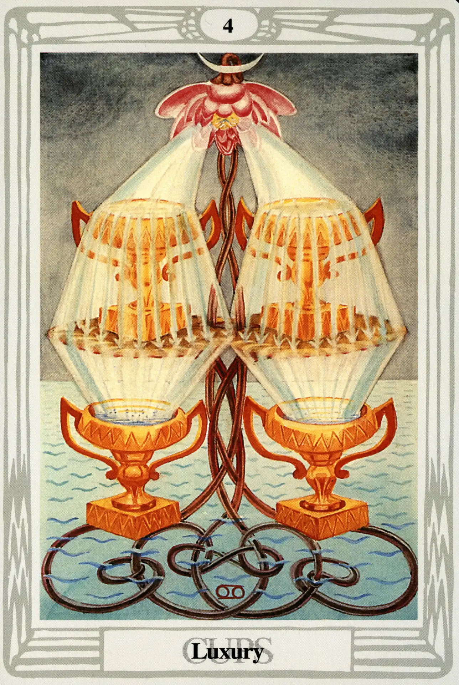

Cups
Four of Cups
Luxury

(Moon in Cancer)
20° to 30° Cancer
July 12 to July 21
Original Title: Lord of Blended Pleasure.
Golden Dawn Model: A hand appears from clouds at the bottom of the card grasping three stems of a lotus. Two green leaves grow from the right and left stems, forming a cross between four cups arranged as a square. The center stem flowers at the top of the card. Two streams of water flow right and left from the flower, filling the top two cups, which overflow and fill the two lower cups.
Queen Scale for Chesed: Blue.
The Four Scales for Moon: Blue; Silver; Cold Pale Blue; Silver, rayed Sky Blue.
The Four Scales for Cancer: Amber; Maroon; Rich bright Russet; Dark Greenish Brown.
Formula: 4 (Chesed) of Cups (Briah) + Moon in Cancer = LUXURY
This card is really loaded. As a matter of fact, it borders on being too much of a good thing. Just look at the formula: four is Chesed, the sphere of generous, expansive, and beneficent Jupiter. Jupiter is exalted in Cancer, and Cancer is ruled by the Moon. Can the components of one card get any cozier? No, but, in this case, familiarity is starting to breed contempt and eventually enough will be enough. When this card appears in a reading, enjoy the moment, but don't expect it to last forever.
The sea that was so still in the Three of Cups is now restless. The Cups have become heavy, the bottom two have sunk to the water's surface and are resting precariously on the lotus stems themselves; the upper two cups have actually flattened out the lotus blossoms and are threatening to collapse the entire plant. The source of the water, the single blossom at the top of the card, is wilted and has lost several petals. It gives the appearance that it is about to run out of juice. I believe it is.
Like the Demiurge itself, the Four of Cups, in its self-absorbed arrogance, thinks Luxury is the god of the suit of Cups—all the while never dreaming that it owes its very existence to the sublime true gods of the supernal triad, the Ace, Two, and Three of Cups.